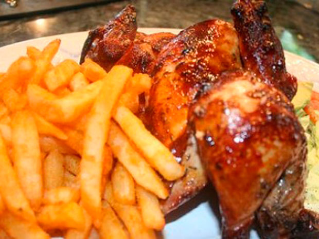
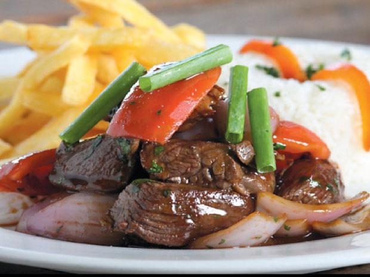

Pollo a la brasa
25 de Setiembre 2017 El plato consiste en carne de pollo hembra joven eviscerada, marinada y cocida a las brasas. La carne macerada se hornea al calor de las brasas en un horno especial denominado «rotombo», que hace girar el animal sobre su propio eje, recibiendo uniformemente el calor de las brasas. El horno puede funcionar con carbón o leña o gas, siendo el más tradicional el de leña, la cual muchas veces proviene del algarrobo.El aderezo o marinada de la carne incluye distintos ingredientes, tales como cerveza negra, romero, huacatay, sal y pimienta, sillao, comino y ají panca, en distintas proporciones. La preparación de este aderezo varía de local en local y así hay locales que añaden, incluso un poco de pisco. Aunque el nombre del plato utiliza el género masculino («pollo»), la carne empleada proviene exclusivamente de las hembras ya que son más tiernas y jugosas.
Escribe un comentario:


Lomo saltado
30 de Setiembre 2017 El lomo saltado es un plato típico de la gastronomía del Perú cuyos registros datan de fines del siglo XIX, donde se le conocía como «lomito de vaca», «lomito saltado» o «lomito a la chorrillana».
El plato tal como se definió en aquella época y se le conoce actualmente surge por la influencia de los chinos-cantoneses, contiene la sazón y la mezcla de la cocina criolla peruana con la oriental.La influencia oriental se demuestra por el uso de la técnica de cocción en sartén, ahora conocida como «lomo saltado». Hay variantes introducidas en este plato, porque dependiendo del gusto, se han reemplazado unos ingredientes por otros. Este plato es uno de los más consumidos popularmente en el Perú.
Escribe un comentario: